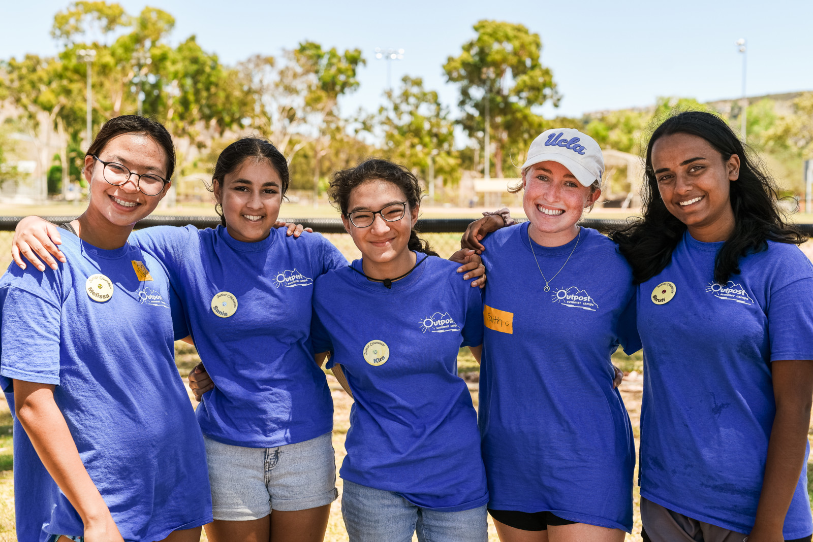

About GreenSprout
Content
GreenSprout was founded in 2021 by a group of passionate neighbours who believed in tackling food insecurity with simple, sustainable solutions.
What started with just one community garden plot has now grown into a city-wide initiative, with partnerships across schools, local businesses, and NGOs.
Our Story
What began as a single garden plot in a local neighborhood has blossomed into a thriving, city-wide initiative. GreenSprout was started by a small group of passionate gardeners who believed everyone should have access to the benefits of growing their own food.
Our Values
- Sustainability: Advocating for environmentally sustainable practices in every aspect of gardening.
- Community: Creating a sense of belonging and collaboration through shared gardening efforts.
- Inclusivity: Ensuring that everyone, regardless of background, can participate in gardening.
- Empowerment: Providing knowledge and resources to empower individuals to take control of their food sources.
Key Programs & Activities
GreenSprout offers several key programs and activities that help build a sustainable future:
- Community Gardens: Providing garden plots for individuals and families to grow their own food.
- Workshops & Training: Hands-on workshops on organic gardening, composting, and sustainable farming.
- Seed Bank: A community resource offering free seeds to gardeners.
- Tool Sharing Program: Lending essential gardening tools to the community.
- School Partnerships: Partnering with local schools to integrate gardening into education.
- NGO & Business Partnerships: Collaborating with local organizations to further our mission.
The Impact of GreenSprout
GreenSprout has helped over 500 families start their gardens, distributed thousands of pounds of produce to food banks, and partnered with 25 schools.
Meet Our Team
Our team is dedicated to helping individuals and communities grow. We’re a passionate group working toward a greener, healthier future.
